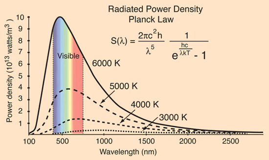
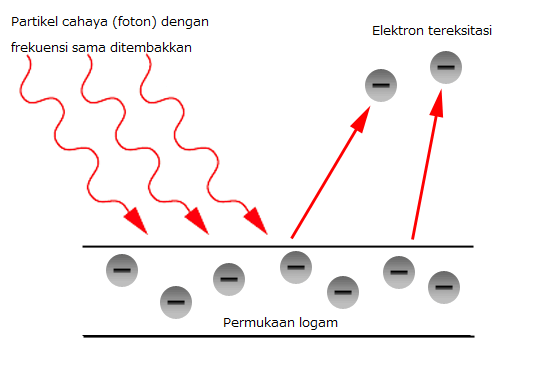
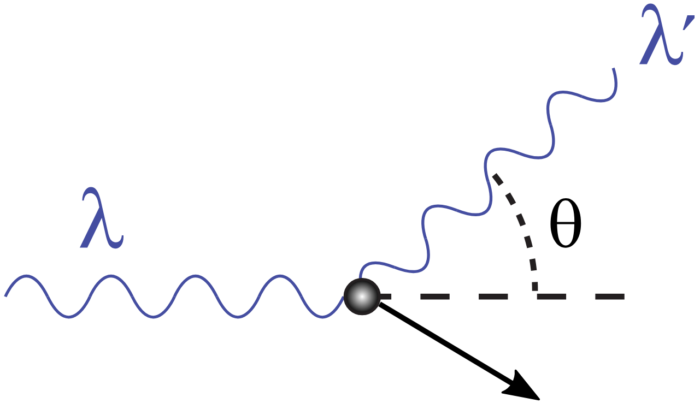

## Radiasi Benda Hitam dan Gejala Kuantum --- ### Radiasi Benda Hitam  --- - Radiasi panas adalah radiasi yang dipancarkan oleh sebuah benda sebagai akibat suhunya. Benda baru terlihat karena meradiasikan panas jika suhunya melebihi 1.000 K. Pada suhu di atas 2.000 K benda berpijar kuning atau keputih-putihan, seperti pijar putih dari filamen lampu pijar. Begitu suhu benda terus ditingkatkan, intensitas relatif dari spektrum cahaya yang dipancarkannya berubah. Hal ini menyebabkan pergeseran warna-warna spektrum yang diamati, yang dapat digunakan untuk menentukan suhu suatu benda. --- - Secara umum bentuk terperinci dari spektrum radiasi panas yang dipancarkan oleh suatu benda panas bergantung pada komposisi benda itu. Walaupun demikian, hasil eksperimen menunjukkan bahwa ada satu kelas benda panas yang memancarkan spektra panas dengan karakter universal. Benda ini adalah benda hitam atau *black body*. - Benda hitam memiliki absorptansi dan emisivitas yang besarnya satu. --- ### Radiasi Benda Hitam - Radiasi benda hitam adalah radiasi elektromagnetik yang dipancarkan oleh sebuah benda hitam. Radiasi ini menjangkau seluruh daerah panjang gelombang. Distribusi energi pada daerah panjang gelombang ini memiliki ciri khusus, yaitu suatu nilai maksimum pada panjang gelombang tertentu. Letak nilai maksimum tergantung pada temperatur, yang akan bergeser ke arah panjang gelombang pendek seiring dengan meningkatnya temperatur. --- - Pada tahun 1879 seorang ahli fisika dari Austria, Josef Stefan melakukan eksperimen untuk mengetahui karakter universal dari radiasi benda hitam. Ia menemukan bahwa daya total per satuan luas yang dipancarkan pada semua frekuensi oleh suatu benda hitam panas (intensitas total) adalah sebanding dengan pangkat empat dari suhu mutlaknya. Sehingga dapat dirumuskan: ###### `$$I_{total}=\sigma T^4$$` --- - Benda panas yang bukan benda hitam, akan memenuhi hukum yang sama, hanya diberi tambahan koefisien emisivitas yang lebih kecil daripada 1, sehingga: ###### `$$\frac P A=e\sigma T^4$$` --- Keterangan: - *I* = Intensitas/Daya per satuan luas - *P* = Daya (W) - *A* = luas permukaan benda (m<sup>2</sup>) - *e* = emisivitas - *T* = suhu mutlak (K) - *σ* = konstanta Stefan-Boltzmann (5,67 × 10<sup>-8</sup> Wm<sup>-2</sup>K<sup>-4</sup>) --- ### Hukum Pergeseran Wien - Untuk sebuah benda hitam, berlaku suatu hubungan antara panjang gelombang (λ) dengan suhu mutlak yang dinyatakan: ###### `$$\lambda_mT=C$$` Keterangan: - *λ<sub>m</sub>* = panjang gelombang maksimum (m) - *T* = suhu mutlak (K) - *C* = konstanta Pergeseran Wien (2,898 × 10<sup>-3</sup> mK) --- - Dalam Teori klasik, terdapat dua pendekatan/perkiraan yang dipakai untuk menjelaskan fenomena benda hitam. pendekatan pertama berasal dari Teori wien. Teori kedua dicetuskan oleh Rayleigh-Jeans. - Aproksimasi Wien ###### `$$u_{(f,T)}=Af^3e^{-\frac{Bf}{T}}$$` ###### `$$u_{(\lambda,T)}=c_1\lambda^{-5}e^{-\frac{c_2}{\lambda T}}$$` - Wien mendapatkan nilai *c<sub>1</sub>* = `$8\pi hc$` dan *c<sub>2</sub>* = `$\frac{ch}{k}$`. --- - Teori Wien dapat menjelaskan fenomena radiasi benda hitam untuk panjang gelombang pendek tetapi tidak untuk panjang gelombang panjang. - Teori Rayleigh-Jeans ###### `$$u_{(T,\lambda)}=\frac{8\pi kT}{\lambda^4}$$` - Hasil ini sesuai dengan hasil yang diperoleh secara percobaan untuk panjang gelombang yang panjang, tetapi tidak sama pada panjang gelombang pendek. --- - Begitu λ mendekati nol, fungsi *P<sub>(λ,T)</sub>* yang ditentukan secara percobaan juga mendekati nol, tetapi fungsi yang dihitung mendekati tak terhingga karena sebanding dengan *λ<sup>−4</sup>*. Dengan demikian, yang tak terhingga terkonsentrasi dalam panjang gelombang yang sangat pendek. Hasil ini dikenal sebagai katastrof ultraviolet. --- ### Hukum Radiasi Planck - Pada tahun 1900, fisikawan Jerman, Max Planck, mengumumkan bahwa dengan membuat suatu modifikasi khusus dalam perhitungan klasik dia dapat menjabarkan fungsi *P<sub>(λ,T)</sub>* yang sesuai dengan data percobaan pada seluruh panjang gelombang. --- - Hukum radiasi Planck menunjukkan distribusi (penyebaran) energi yang dipancarkan oleh sebuah benda hitam. Hukum ini memperkenalkan gagasan baru dalam ilmu fisika, yaitu bahwa energi merupakan suatu besaran yang dipancarkan oleh sebuah benda dalam bentuk paket-paket kecil terputus-putus, bukan dalam bentuk pancaran malar (kontinyu). Paket-paket kecil ini disebut *kuanta* dan hukum ini kemudian menjadi dasar teori kuantum. --- - Dalam pemahaman itu, cahaya terdiri atas partikel-partikel yang disebut sebagai foton. Setiap foton memiliki energi sebesar ###### `$$E=hf=\frac{hc}{\lambda}$$` untuk *n* jumlah foton ###### `$$E=nhf=n\frac{hc}{\lambda}$$` --- Keterangan: - *λ* = panjang gelombang (m) - *f* = frekuensi (Hz) - *E* = Energi foton (J) - *h* = konstanta Planck (6,626 × 10<sup>-34</sup> Js) --- - Distribusi/sebaran energi foton itu mengikuti distribusi Bose-Einstein, yakni: ###### `$$\langle E \rangle=\frac{1}{e^{\frac{hf}{kT}}-1}$$` Keterangan: - *k* = konstanta Boltzmann (1,38 × 10<sup>-23</sup> J/K) - *T* = suhu mutlak (K) --- - Rapat energi atau intensitasnya, dalam persamaan radiasi Planck, menjadi ###### `$$u_{(f)}=\frac{8\pi h}{c^3}\frac{f^3}{e^{\frac{hf}{kT}}-1}$$` atau ###### `$$u_{(\lambda)}=\frac{8\pi hc}{\lambda^5}\frac{1}{e^{\frac{hc}{\lambda kT}}-1}$$` --- - Persamaan Radiasi Planck dibatasi oleh dua hal penting berikut ini: 1. Untuk frekuensi rendah `$f\ll\frac{kT}{h}$` dan panjang gelombang yang panjang `$\lambda\gg\frac{kT}{h}$`, maka akan berlaku rumus Rayleigh-Jeans. ###### `$$u_{(T,f)}=8\pi c^{-3}f^2kT$$` atau ###### `$$u_{(T,\lambda)}=\frac{8\pi kT}{\lambda^4}$$` --- 2. Pada frekuensi tinggi `$f\gg \frac{kT}{h}$`, dan pada panjang gelombang yang pendek `$\lambda\ll\frac{kT}{h}$`, maka akan berlaku rumus Wien: ###### `$$u_{(T,f)}=8\pi hc^{-3}f^3e^{-\frac{hf}{kT}}$$` atau ###### `$$u_{(T,\lambda)}=8\pi hc\lambda^{-5}e^{-\frac{hc}{\lambda kT}}$$` --- ### Efek Fotolistrik <a href="https://phet.colorado.edu/sims/cheerpj/photoelectric/latest/photoelectric.html?simulation=photoelectric"></a> --- #### Efek Fotolistrik - Efek fotolistrik ditemukan oleh Heinrich Hertz pada tahun 1887 dan telah dikaji oleh Phillip Lenard pada tahun 1900. - Sebuah bahan logam disinari dengan sinar ultraviolet. - Muncul lucutan listrik antar elektroda. --- #### Hasil pengamatan Lenard: - Lucutan listrik terjadi sesaat, meski intensitas cahaya lemah. - Terdapat tegangan penghenti. Artinya ketika arah medan listrik dibalik, dengan membalik kutub catu daya, elektron berhenti bergerak. Tegangan penghenti ini nilainya tetap untuk setiap frekuensi cahaya yang digunakan. --- - Tegangan penghenti tidak tergantung intensitas, tapi pada frekuensi (untuk satu jenis bahan yang sama). - arus yang teramati sebanding dengan intensitas cahaya yang digunakan --- #### Interpretasi klasik - Sebagai gelombang, cahaya memiliki amplitudo, frekuensi, panjang gelombang. - Tenaga gelombang sebanding dengan luas permukaan yang dilewati (`$E\propto A^2$`) --- #### Fakta: 1. Pelepasan elektron terjadi seketika. → **tidak sesuai** 2. Arus sebanding intensitas. → *sesuai* 3. Untuk satu frekuensi, terdapat tegangan penghenti yang tidak tergantung intensitas. Padahal, tenaga total tergantung intensitas. → **tidak sesuai** 4. Untuk setiap bahan, terdapat frekuensi ambang. Padahal frekuensi tidak ada kaitannya dengan tenaga. → **tidak sesuai** --- #### Penjelasan Einstein (1905): - Einstein meminjam konsep Max Planck, bahwa pada radiasi benda hitam, cahaya dipancarkan oleh benda dalam satuan tenaga yang disebut sebagai *quanta* (terkuantisasi, tercatu, merupakan paket-paket) dengan tenaga sebesar: ###### `$$E=hf=\frac{hc}{\lambda}$$` --- - Gelombang elektromagnetik terkuantisasi, terdiri atas paket-paket tersendiri (quanta) yang disebut foton. Tenaga foton tergantung pada frekuensinya. - Setiap foton yang menumbuk 1 elektron akan memberikan seluruh energinya, dan energi itu digunakan oleh elektron untuk melepaskan diri dari ikatan dan bergerak. --- #### Interpretasi quantum: 1. Pelepasan elektron tergantung pada tenaga foton yang datang. Tidak perlu waktu tunda, jika memang frekuensi sudah di atas frekuensi ambang. → *sesuai* 2. Arus sebanding intensitas. Intensitas berkaitan dengan jumlah foton. Semakin banyak foton, semakin banyak elektron yang lepas, semakin besar arus. → *sesuai* --- 3. Untuk satu frekuensi, terdapat tegangan penghenti yang tidak tergantung intensitas. Tegangan penghenti merupakan tenaga untuk menghentikan gerak elektron, atau melawan energi kinetiknya. Energi kinetik elektron berasal dari energi foton dikurangi dengan energi ikat. Karena nilai energi foton dan energi ikat adalah tentu, maka nilai tegangan penghenti juga tentu. → *sesuai* --- 4. Untuk setiap bahan, terdapat frekuensi ambang. Tenaga foton dipakai elektron untuk melepaskan diri dari ikatan, dan bergerak. `$hf=\phi+Ek$`. Sehingga dibutuhkan energi foton yang sama dengan energi ikat elekton, untuk elektron dapat lepas. → *sesuai* --- #### Penemuan Sinar-X - Sinar-X dapat dihasilkan dengan tabung Sinar-X atau tabung hampa udara yang menggunakan tegangan tinggi untuk mempercepat elektron. Elektron dilepaskan melalui katoda dan ditembakkan menuju anoda, yang merupakan bahan logam. - Logam akan memancarkan radiasi elektromagnetik. Panjang gelombangnya akan sesuai dengan jenis logam yang digunakan dan kecepatan eletron yang menumbuknya. - Proses ini merupakan kebalikan dari efek fotolistrik. --- #### Efek Hamburan Compton - Fenomena lain yang menunjukkan gejala quantum adalah Efek Hamburan Compton. - Pada tahun 1923, Arthur Holy Compton melakukan percobaan untuk membuktikan teori cahaya sebagai partikel dengan menembakkan sinar-X ke logam tipis berilium. - Hamburan dideteksi melalui detektor. ---  --- - Sinar-X yang menumbuk suatu partikel akan kehilangan sebagian energinya dan kemudian terhambur dengan sudut hamburan sebesar *θ*. - Berdasarkan pengamatan Compton, panjang gelombang sinar-X yang terhambur memiliki panjang gelombang yang lebih besar dari panjang gelombang semula (frekuensinya lebih kecil dari semula). - Ini dikarenakan sebagian energinya diserap oleh elektron. --- Energi foton Sinar-X yang terhambur ###### `$$E=(hf-hf')=hc(\frac{1}{\lambda}-\frac{1}{\lambda'})$$` di mana `$f>f'$` dan `$λ'>λ$` --- Hubungan antara panjang gelombang dan panjang gelombang hamburan dinyatakan sebagai berikut: ###### `$$\lambda'-\lambda=\frac{h}{m_0c}(1-\cos\theta)$$` `$\frac{h}{m_0c}$` sering juga digantikan dengan `$\lambda_c$` --- Keterangan: - *λ* = panjang gelombang sinar-X sebelum tumbukan (m) - *λ'* = panjang gelombang sinar-X setelah tumbukan (m) - *m<sub>0</sub>* = massa diam elektron (9,1 × 10<sup>-31</sup> kg) - *c* = cepat rambat cahaya (3,0 × 10<sup>8</sup> m/s) - *h* = konstanta Planck (6,626 × 10<sup>-34</sup> Js) - *θ* = sudut hamburan - *λ<sub>c</sub>* = panjang gelombang Compton